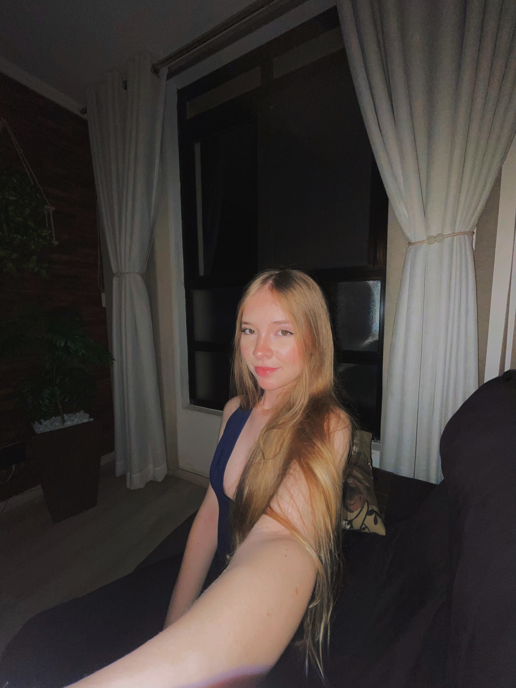

Olá, eu sou a Joice!!
Tenho 16 anos e curso o Ensino Médio integrado ao técnico em Informática pelo IFPR. A tecnologia é uma das áreas que mais me fascinam, e estou sempre em busca de aprender e evoluir cada vez mais. Além da formação escolar, também me especializo em Tráfego Pago e estudo na Lions Startups, onde desenvolvo habilidades voltadas ao empreendedorismo e à inovação, ampliando minha visão sobre o mercado e criando novas oportunidades.
No meu tempo livre, gosto muito de escutar música, principalmente da banda CBJR, que me inspira com suas letras e energia. Acredito que a música faz parte da minha rotina e me ajuda a manter o foco e a motivação para alcançar meus objetivos.